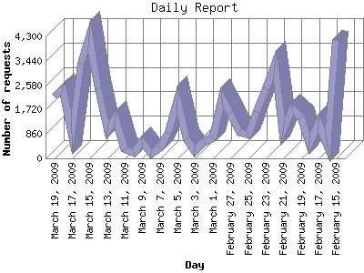

The Daily Report identifies the activity for each day within the reporting period. Remember that one page hit can result in several server requests as the images for each page are loaded.

| Day | Number of requests | Number of page requests | |
|---|---|---|---|
| 1. | February 15, 2009 | 4,156 | 626 |
| 2. | February 16, 2009 | 460 | 90 |
| 3. | February 17, 2009 | 1,241 | 266 |
| 4. | February 18, 2009 | 500 | 78 |
| 5. | February 19, 2009 | 1,446 | 171 |
| 6. | February 20, 2009 | 1,721 | 242 |
| 7. | February 21, 2009 | 968 | 133 |
| 8. | February 22, 2009 | 3,287 | 432 |
| 9. | February 23, 2009 | 2,426 | 126 |
| 10. | February 24, 2009 | 1,640 | 162 |
| 11. | February 25, 2009 | 834 | 257 |
| 12. | February 26, 2009 | 918 | 157 |
| 13. | February 27, 2009 | 1,612 | 252 |
| 14. | February 28, 2009 | 2,103 | 551 |
| 15. | March 1, 2009 | 709 | 253 |
| 16. | March 2, 2009 | 569 | 180 |
| 17. | March 3, 2009 | 254 | 122 |
| 18. | March 4, 2009 | 681 | 281 |
| 19. | March 5, 2009 | 2,067 | 626 |
| 20. | March 6, 2009 | 893 | 350 |
| 21. | March 7, 2009 | 371 | 79 |
| 22. | March 8, 2009 | 173 | 11 |
| 23. | March 9, 2009 | 563 | 43 |
| 24. | March 10, 2009 | 202 | 134 |
| 25. | March 11, 2009 | 310 | 36 |
| 26. | March 12, 2009 | 1,419 | 352 |
| 27. | March 13, 2009 | 1,008 | 260 |
| 28. | March 14, 2009 | 2,458 | 268 |
| 29. | March 15, 2009 | 4,291 | 1,108 |
| 30. | March 16, 2009 | 3,352 | 963 |
| 31. | March 17, 2009 | 893 | 296 |
| 32. | March 18, 2009 | 2,440 | 519 |
| 33. | March 19, 2009 | 2,191 | 585 |
Most active day March 15, 2009 : 1,108 pages sent. 4,291 requests handled.
Daily average: 303 pages sent. 1,459 requests handled.
This report was generated on March 20, 2009 06:23.
Report time frame February 15, 2009 07:17 to March 19, 2009 23:47.
| Web statistics report produced by: analog 6.0 / Report Magic 2.21 |